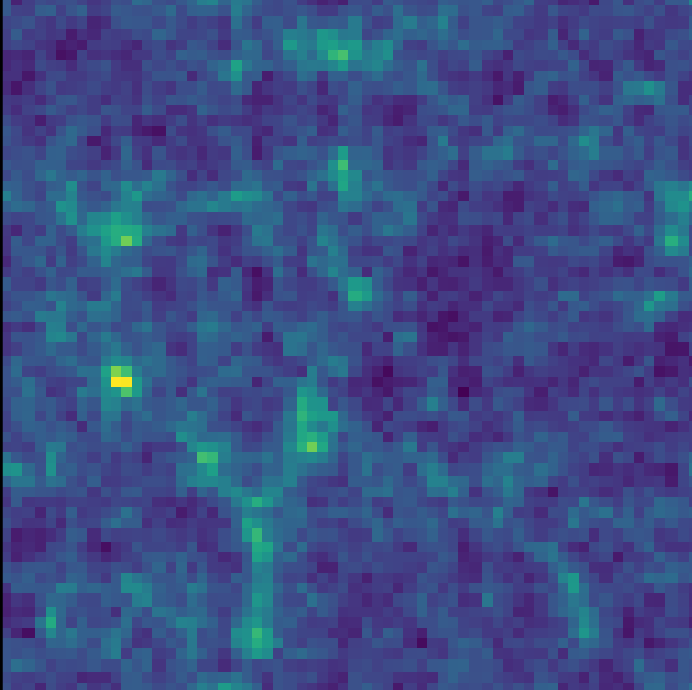
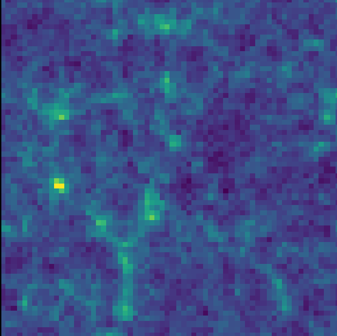
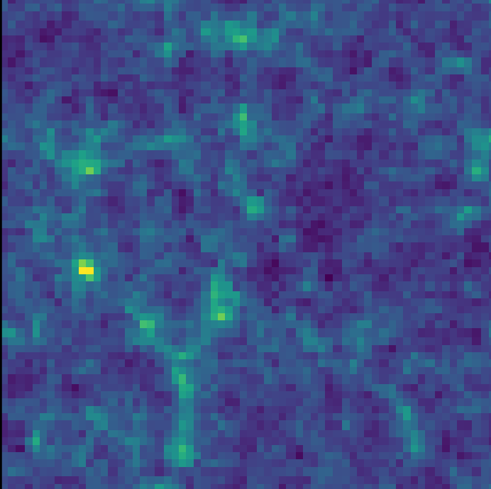

High dimensional Bayesian Inference,
and how to reconstruct the Universe
SEAS, Harvard University
March 21st, 2024
Chirag Modi
Center for Computational Astrophysics
Center for Computational Mathematics
Flatiron Institute
Cosmology: the story of our Universe


Credits: M. Blanton and SDSS
Standard model: $\Lambda$-CDM
$\Lambda$: cosmological constant dark energy
CDM: Cold dark matter
$\Lambda$: cosmological constant dark energy
CDM: Cold dark matter
6 parameters in $\Lambda$-CDM model
$$\theta = (\Omega_b, \Omega_m, H, \sigma_8, n_s, \tau)$$
- baryon density fraction ($\Omega_b$)
- dark matter density fraction ($\Omega_m$)
- rate of acceleration of the Universe ($H$)
- amplitude of density fluctuations ($\sigma_8$)
- variation of fluctuations with scales ($n_s$)
- optical depth to background radiation ($\tau$)
Open questions
- What is dark energy?
- What is dark matter made of?
- How did inflation happen?
- What are the masses of neutrinos?
- Is general relativity correct?
- ...
Next generation of cosmology

DESI

Euclid

SphereX

LSST

Simons
Observatory
Observatory

Roman
Telescope
Telescope

HIRAX

CMB-S4
Dark Energy Spectroscopic Instrument (DESI)
- 35 million galaxies & quasars over 5 years
- Previous largest survey: $\sim$1.2 million galaxies
- In first 6 months, mapped out more galaxies than all of the previous 3D surveys combined.

Credits: DESI Collaboration
LSST will collect data on 10 billion objects
How do we extract all the information from this data?
Model the galaxy field: full three-dimensional distribution of galaxies.
Field level inference: $\,$model positions of individual galaxies,
not low-dimensional summary statistics.
No information is lost by data compression.

Equivalent to probing 20x larger volume.

Spatial clustering statistics$\,\,$
Modi et al. (in preparation);
Modi, Feng, Seljak (2017);
Leclercq and Heavens (2021)
Modi, Feng, Seljak (2017);
Leclercq and Heavens (2021)
Bayesian inference
Modeling for field-level inference
$x \sim p(x|\theta)$
3-D galaxy field $\sim$ probabilistic forward model (parameters)
$$\theta = (\Lambda, z, \phi)$$
$\Lambda$
Cosmology
$\Lambda \sim p(\Lambda)$
Cosmology
$\Lambda \sim p(\Lambda)$

Initial
Dark Matter
$z \sim \mathcal{N}(0, g(\Lambda))$

Final
Dark Matter
$\delta = f(z,\Lambda)$

Galaxies
(Data, $x$)
$x \sim p(x|\delta, \phi)$
$\longrightarrow$
$\longrightarrow$
$\longrightarrow$
Boltzmann
equations
equations
Gravity evolution
($N$-Body simulations)
($\mathbf{\Lambda}$)
($N$-Body simulations)
($\mathbf{\Lambda}$)
Galaxy models
$\phi\sim p(\phi)$
$\phi\sim p(\phi)$

$$ \nabla^2\Phi = 4 \pi G \rho $$
Challenges for field-level inference
$x \sim p(x | \Lambda, z, \phi)$
Spatial analysis, e.g., climate science

Molecular dynamics

Hydrology, monitoring & remediation

Epidemiology & biomedicine
Woodbury and Rubin. (2000); Kulakova, Arampatzis et al. (2017); Conrad, Davis et al. (2017); Dong, Haines et al. (2021); Hu, Gonzales et al. (2017)
Outline of the talk
Tools for high-dimensional inference
Differentiable probabilistic models
- High-dimensional inference
Initial conditions $z:$ millions of unknown parameters - Gradient based inference algorithms
E.g. gradient descent, Hamiltonian Monte Carlo (HMC)
- Response of posterior to the underlying parameters.
- Differentiable evolution of particles under gravity
$g = \frac{\partial\, \log p(\theta | x)}{\partial\, \theta} = $ $\frac{\partial\, \log p(x| \theta)}{\partial\, \theta}$ $+ \frac{\partial\, \log p(\theta)}{\partial\, \theta}$


Automatic differentiation
The hammer behind deep learning,
e.g., TensorFlow, JAX, Pytorch
Wang, Mo, Yang, Bosch (2014)
Modi, Feng and Seljak (2017)
Seljak, Aslanyan, Feng, Modi (2017)
Jasche & Lavaux (2018)
Modi, Feng and Seljak (2017)
Seljak, Aslanyan, Feng, Modi (2017)
Jasche & Lavaux (2018)
Automatically Differentiable simulations
Credits : Francois Lanusse

Modi, Lanusse, Seljak (2020)
Seljak, Aslanyan, Feng, Modi (2017)
https://github.com/DifferentiableUniverseInitiative/flowpm
Modi, Lanusse, Seljak (2020)
Seljak, Aslanyan, Feng, Modi (2017)
Li, Modi et al. (2022)
Kwan, Modi, et al. (2022)
Li, Lu, Modi et al. (2022)
https://github.com/eelregit/pmwd
https://github.com/DifferentiableUniverseInitiative/flowpm
Seljak, Aslanyan, Feng, Modi (2017)
https://github.com/DifferentiableUniverseInitiative/flowpm
Modi, Lanusse, Seljak (2020)
Seljak, Aslanyan, Feng, Modi (2017)
Li, Modi et al. (2022)
Kwan, Modi, et al. (2022)
Li, Lu, Modi et al. (2022)
https://github.com/eelregit/pmwd
https://github.com/DifferentiableUniverseInitiative/flowpm

Combustion kinetic modeling

Kinetics

Molecular dynamics

High energy theory &
particle physics

Community tool building
Modi, Lanusse, Seljak (2020)
Li, Modi et al. (2022)
Ji, Su, Pang et al.(2021)
Goodrich, King et al.(2021)
Dorigo, Giammanco et al.(2023)
Wang, Wu, Dietschreit et al. (2023)
Li, Modi et al. (2022)
Ji, Su, Pang et al.(2021)
Goodrich, King et al.(2021)
Dorigo, Giammanco et al.(2023)
Wang, Wu, Dietschreit et al. (2023)
Reconstructing the Universe with Bayesian inference
High dimensional Bayesian inference
Hamiltonian Monte Carlo (HMC)
Goal: Generate samples from the posterior $p(\theta|x)$.
Goal: Generate samples from the posterior $p(\theta|x)$.
Construct a Markov chain by simulating Hamiltonian dynamics.
$\theta$: positions; $\,$$u$: auxiliary momentum
Transition kernel: $(\theta, u)\rightarrow(\theta', u')$
$ \dot{\theta} \propto u$
$ \dot{u} \propto -\nabla_{\theta}\log p(x, \theta)$
$ \dot{u} \propto -\nabla_{\theta}\log p(x, \theta)$
ODEs evolved using symplectic integrators like leapfrog.
Detailed balance criterion for accepting proposals $\alpha = 1 \land \frac{p(\theta'|x)}{p(\theta|x)}$

https://github.com/chi-feng/mcmc-demo
Variational inference (VI)
Goal: Approximate the posterior with a parametric distribution $$ p(\theta | x) \approx q_{\phi} (\theta) $$
E.g. $q_\phi = \mathcal{N}(\mu, \Sigma)$, then
$\phi = (\mu, \Sigma)$
Goal: Approximate the posterior with a parametric distribution $$ p(\theta | x) \approx q_{\phi} (\theta) $$
Fit parameters $\phi$ to minimize a dissimilarity metric $d(q;p)$
E.g., reverse Kullback-Leibler divergence $$D_{\mathrm{KL}}(q||p) = \mathbb{E}_{q}(\log q(\theta) - \log p(\theta|x)) $$

Inferring the initial conditions of the Universe #1: HMC
Data
$x:$ 3D dark matter density data
$x = f(z) + \epsilon$
$f(z):$ $N$-body simulation; $\quad \epsilon\sim\mathcal{N}(0,1)$
Likelihood
$p(x|\theta): \mathcal{N}\big(f(z), 1.\big)$
Parameters
$\theta:$ $\Lambda,\,\phi$, $\,z$ = initial conditions on a $64^3$ grid
$p(z) = \mathcal{N}\big(0, g(\Lambda))$
$x:$ 3D dark matter density data
$x = f(z) + \epsilon$
$f(z):$ $N$-body simulation; $\quad \epsilon\sim\mathcal{N}(0,1)$
Likelihood
$p(x|\theta): \mathcal{N}\big(f(z), 1.\big)$
Parameters
$\theta:$ $\Lambda,\,\phi$, $\,z$ = initial conditions on a $64^3$ grid
$p(z) = \mathcal{N}\big(0, g(\Lambda))$
Quantitative comparison
Transfer Function as function of length-scales ($k$): $$t_{ab} (k) = \frac{\textrm{clustering in field }a}{{\textrm{clustering in field }b}}$$ Expectation: 1 on all scales
Transfer Function as function of length-scales ($k$): $$t_{ab} (k) = \frac{\textrm{clustering in field }a}{{\textrm{clustering in field }b}}$$ Expectation: 1 on all scales
True $z$
HMC samples of $z$
Data $x$

 



Cost of HMC
Auto-correlation length of samples in the MCMC chain (for different $k$-bins i.e. length-scales)

-
Auto-correlation lengths can be 1000 samples long.
~10,000 simulations for a single independent sample!!
-
Computationally prohibitive in realistic settings.
 Modi, Li, Blei (2022)
Modi, Li, Blei (2022) Inferring the initial conditions of the Universe #2: VI

Posterior inferred by HMC

Posterior inferred by VI with reverse KL
Variational inference with reverse KL is extremely challenging optimization!
$$D_{\mathrm{KL}}(q||p) = \mathbb{E}_{q}(\log q(\theta) - \log p(\theta|x)) $$
Modi, Li, Blei (2022) Dai and Seljak (2022)
Can we use other divergences?
Posterior inferred by VI with reverse KL

True $z$
HMC samples of $z$
Data $x$
Variational self-Boosted Sampling (VBS)
Combine the strengths of HMC and VI.
Strengths
- HMC: ensures samples are from the target.
- VI: samples generated from variational distribution are independent.
Strategy
Hybrid (Markov) Monte Carlo Chain
- Alternately generate proposals from HMC kernel & NF.
- Explore the posterior faster.
- Detailed balance criterion for accepting NF proposals. $$\alpha(\theta_1\rightarrow \theta_2) = \textrm{min}\Big(1, \frac{p(\theta_2|x)\, q_\phi(\theta_1)}{p(\theta_1|x)\, q_\phi(\theta_2)}\Big)$$
- Train NF with samples generated from HMC on-the-fly.
$\rightarrow$ can use $D_{KL}(p||q)$ divergence.

Samples from NF with VBS
10x faster than HMC
10x faster than HMC
Similar techniques can be used
to sample from multi-modal distributions. Modi, Li, Blei (2022)
Gabrie et al. (2022)
Inferring cosmological parameters
$$\sigma \sim \mathcal{N}(0, 3)$$
$$\mu \sim \mathcal{N}(0, \exp(\sigma/2))$$
$$x \sim p(x | \mu)$$
Parameters at different levels are strongly coupled.
Multiscale/stiff system: need variable step sizes.


Hierarchical probabilistic model

Joint prior distribution of $\mu,\,\sigma$

HMC does not robustly sample funnel distributions.
**Sampling from prior can be solved by reparameterization,
but not from the posterior.
but not from the posterior.
So where does that leave us?
Goal: To infer the comsology parameters & the initial conditions of the Universe by modeling the 3D galaxy field.
- Automatic differentiation tools
$\rightarrow$ using gradient based algorithms with physical simulations - Inferring initial conditions: high dimensional inference
- Hamiltonian Monte Carlo: accurate but expensive.
- Variational inference: fast, but difficult to optimize
- Variational self-boosted sampling: combine HMC & VI, fast and accurate.
- Inferring cosmology parameters & initial conditions together
- Hierarchical model
- HMC is not robust.

Overcoming limitations of the current Bayesian inference algorithms.
- HMC does not robustly sample multiscale distributions.
Delayed rejection HMC - VI presents a hard optimization problem.
Score based variational inference
Delayed rejection Hamiltonian Monte Carlo (DRHMC)
When faced with a rejection, make another proposal with a different transition kernel.
https://github.com/chi-feng/mcmc-demo

HMC

DRHMC


DRHMC for Funnel: make the
2$^{\textrm{nd}}$ proposal with reduced step-size.
2$^{\textrm{nd}}$ proposal with reduced step-size.
Modi, Barnett, and Carpenter (2022)
Green and Mira (2001)
Green and Mira (2001)
Delayed rejection approaches- II
HMC

DRHMC


Cost for stochastic volatility model
Modi, Barnett, and Carpenter (2022)
Road ahead

Overcoming limitations of the current Bayesian inference algorithms.
- HMC does not robustly sample multiscale distributions.
Delayed rejection HMC - VI presents a hard optimization problem.
Score based variational inference
Score matching for Variational Inference

Gaussian Score matching for Variational Inference (GSM)
Algorithm
At iteration $t$,
- Sample $\theta_t$
- Update $\phi$:
$$\quad \phi_{t+1} = \textrm{min KL}(q_{\phi_t} || q_{\phi_{t+1}})$$ such that $\quad \nabla_\theta \log q_\phi(\theta_t) = \nabla_\theta \log p(\theta_t, x)$.
For Gaussian distribution $q_\phi = \mathcal{N}(\mu, \Sigma)$, closed form updates
$$\mu_{t+1} = \mu_t + A_t\big(\nabla_\theta \log p(\theta_t, x) - \nabla_\theta \log q_\phi(\theta_t)\big) $$ $$\Sigma_{t+1} = \Sigma_t + (\mu_t - \theta_t) (\mu_t - \theta_t)^{T} - (\mu_{t+1} - \theta_{t}) (\mu_{t+1} - \theta_{t})^{T}$$
$$\mu_{t+1} = \mu_t + A_t\big(\nabla_\theta \log p(\theta_t, x) - \nabla_\theta \log q_\phi(\theta_t)\big) $$ $$\Sigma_{t+1} = \Sigma_t + (\mu_t - \theta_t) (\mu_t - \theta_t)^{T} - (\mu_{t+1} - \theta_{t}) (\mu_{t+1} - \theta_{t})^{T}$$
Unlike gradient descent optimization:
Package:
- No hyperparameter to tune, e.g., learning rate
- Non-local updates, no Taylor approximation.
Package:
pip install gsmvi


Target $p(\theta)$: Gaussian with dense covariance matrix
Batch and Match (BaM)
BaM objective:
For a batch of $B$ samples: $$ \mathcal{L(q)}: \frac{1}{B}\sum_i ||\nabla_\theta \log q_\phi(\theta_i) - \nabla_\theta \log p(\theta_i, x) ||^2_{\textrm{Cov}(q)} + \frac{2}{\lambda_t}\textrm{KL}(q_{\phi_t} || q_{\phi})$$
For a batch of $B$ samples: $$ \mathcal{L(q)}: \frac{1}{B}\sum_i ||\nabla_\theta \log q_\phi(\theta_i) - \nabla_\theta \log p(\theta_i, x) ||^2_{\textrm{Cov}(q)} + \frac{2}{\lambda_t}\textrm{KL}(q_{\phi_t} || q_{\phi})$$

Comparing algorithms for
B=2 (dashed) and B=32 (solids)
B=2 (dashed) and B=32 (solids)
Road ahead
- Scaling with dimensions:
$\rightarrow$ Gaussian with diagonal+low-rank covariance. - Beyond Gaussian distributions:
$\rightarrow$ score matching VI for normalizing flow.
Cai, Modi et al. (2023)
Summary
Venn diagram of my research interests

Astrophysics
Neutron stars,
Galaxy formation,
Strong gravitational lensing
Causal inference
Econometrics,
Epidimology,
Cryo-EM
Spatial analysis
Neutron stars,
Galaxy formation,
Strong gravitational lensing
Causal inference
Econometrics,
Epidimology,
Cryo-EM
Spatial analysis
Computational methods,
Analytic methods,
Generative models,
HPC simulations,
Software
Analytic methods,
Generative models,
HPC simulations,
Software
MCMC methods, variational inference
Computational efficiency, Robustness
Machine learning and scientific computing tools

Spatial analysis, e.g., climate science

Molecular dynamics

Hydrology, monitoring & remediation

Epidemiology & biomedicine


Summary
Goal: Robust Bayesian inference with complex models in scientific disciplines.
Thank you!
Spatial analysis, e.g., climate science
Molecular dynamics
Hydrology, monitoring & remediation
Epidemiology & biomedicine
Equivalent to probing 20x larger volume.
True $z$
HMC samples of $z$
Data $x$